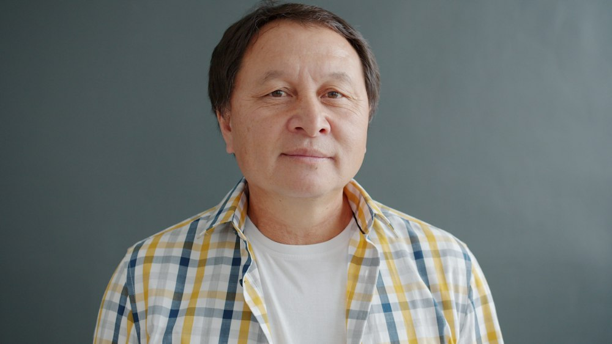
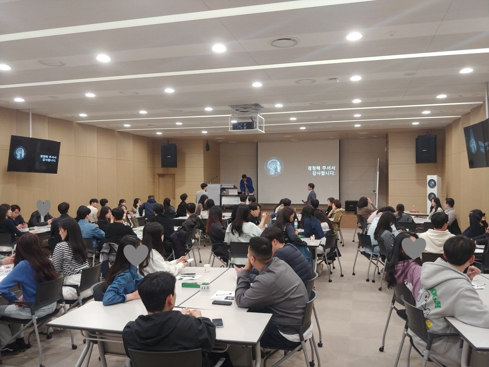
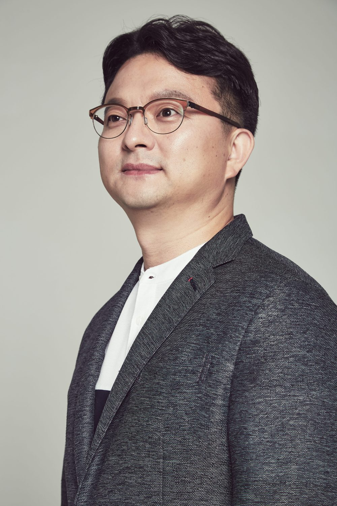

50+ · 퇴직 전환기
인생 2막 설계
돌아보다설계하다
퇴직·전직·이직을 앞두고, 내 경력과 성향에 맞는 일의 2막을 찾습니다.
인생 2막 진단 시작 50+ 커리어 설계 과정 보기50+ 인생설계, 이제 혼자 고민하지 마세요
열심히 달려온 지금이, 나를 위한 인생을 설계할 때입니다. 퇴직 이후의 일부터 만일에 대한 대비까지, 3분 점검으로 지금의 나를 확인하고 맞춤 교육과정으로 한 걸음씩 실마리를 찾아가세요.

50+ · 퇴직 전환기 "퇴직하면, 나는 무슨 일을 해야 할까?" 퇴직·전직·재취업을 앞두고 내 경력이 어디에 쓰일 수 있을지 궁금한 분 인생 2막 진단 시작 60+ · 만일 대비기 "갑자기 아프면, 우리 가족은 괜찮을까?" 예기치 못한 사고와 질병에 대비해 건강·돌봄·재산·가족에게 남길 이야기를 미리 정리하고 싶은 분 만일 대비 점검 시작관심 있는 점검을 골라 보세요. 결과에 맞는 프로그램으로 안내해 드립니다.
이런 고민, 하고 계신가요?
지나온 경력과 성향으로 나에게 맞는 인생 2막 캐릭터와 첫걸음을 알려 드립니다.
이런 생각, 해 보신 적 있나요?
인생을 마무리하는 이야기가 아닙니다. 건강·돌봄, 의료 결정, 재산 정리, 가족 메시지 네 영역의 준비 정도를 알려 드립니다.
인생 2막 진단 결과 요약
만일 대비 점검 결과 요약
나의 만일 대비 준비도
0점
이메일 주소를 남기시면 요약에서는 보이지 않는 내용까지 정리한 상세 결과 페이지를 바로 보여 드립니다.

오랜 시간 현장에서 쌓아온 경험을 바탕으로, 인생 후반을 준비하는 이들에게 실질적인 방향을 제시합니다.

학력
경희대학교 대학원 박사 수료
경력
중앙일보 헬스·문화·교육 부문 사업부장 약 20년
(전략사업팀, 마케팅팀장 등 역임)
현재
한국서비스산업진흥원 이사
(전) 마이북클럽 출판사 대표
(전) 한국열린사이버대학교 특임교수
수상
서울시장 표창, 중앙일보 공로상
강의 진행
현대백화점, 한국생산성본부, 한국서비스산업진흥원, 경희대학교, 강서대학교, 성결대학교, 한림대학교 등 주요 공공기관·기업·학교 출강
고등학교·대학 및 일반인 대상 글쓰기 특강, 책쓰기 아카데미 운영
보유 자격
사회복지사, 중등학교 정교사, 평생교육사, 호텔관리사(구 호텔지배인), 관광통역안내사 등 보유 다수
생애 시기에 맞춰 두 과정을 운영합니다. 50+에게는 일의 2막 설계를, 60+에게는 만일에 대비하는 인생노트를 제공합니다. 두 과정 모두 지나온 삶을 돌아보는 데서 출발해 자연스럽게 이어집니다.
50+ · 퇴직 전환기
돌아보다설계하다
퇴직·전직·이직을 앞두고, 내 경력과 성향에 맞는 일의 2막을 찾습니다.
인생 2막 진단 시작 50+ 커리어 설계 과정 보기60+ · 만일 대비기
돌아보다대비하다남기다
예기치 못한 사고와 질병에 대비해 건강·돌봄·재산·내 뜻을 미리 정리합니다.
만일 대비 점검 시작 60+ 인생노트 과정 보기정년퇴직·희망퇴직·권고사직 등 커리어 전환점에 선 분들을 위한 실전 재설계 프로그램입니다. 지나온 경력을 다시 꺼내 정리하고, 방향과 현실 여건을 함께 점검한 뒤, 재취업·창업·리스킬링 중 나에게 맞는 다음 단계를 구체적인 실행 계획으로 만듭니다.
「고령자고용법」에 따른 재취업지원서비스 기반, 기업·기관 전직지원 교육 과정으로 진행 가능
인생을 마무리하는 과정이 아닙니다. 예기치 못한 사고와 질병, 돌봄이 필요한 순간에도 내 뜻대로, 가족이 덜 힘들도록 미리 준비하는 한국형 인생노트 과정입니다. 지나온 삶을 돌아보고, 건강·돌봄·의료 결정·재산을 정리해 가족에게 남길 이야기를 완성합니다.
저서 『인생노트』(출간예정)를 교재로 활용, 복지관·평생학습관·지자체 통합돌봄 연계 교육으로 진행 가능
글쓰기, 취업, 웰니스, 조직문화, 그리고 인생 전반을 다룬 책을 통해 독자와 만나고 있습니다.
개인, 기업, 기관 대상으로 인생설계와 새로운 출발·두 번째 도약, 만일 대비 강연을 진행합니다. 50+·60+ 대상 프로그램은 프로그램에서 자세히 안내합니다.
인생 후반을 준비하는 이들을 위한 방향 설정, 목표 재정립, 실천 전략을 다루는 강연입니다. 개인의 삶을 돌아보고 앞으로의 방향을 구체적으로 그려볼 수 있도록 안내합니다.
인생 후반, 새로운 시작을 두려워하지 않도록 돕는 강연입니다. 변화하는 시대에 맞는 리스킬링 전략과 배움을 통해 두 번째 도약을 준비하는 방법을 안내합니다.
60+를 위한 강연입니다. 예기치 못한 사고와 질병에 대비해 돌봄 계획, 의료 결정, 재산·디지털 정리, 가족에게 남길 이야기를 미리 준비하는 방법을 다룹니다. 통합돌봄 시대에 꼭 알아야 할 제도도 함께 안내합니다. 과정 자세히 보기

강연·강의 요청, 커리어 설계·인생노트 프로그램 문의, 저서 문의, 협업 제안 등 아래 양식으로 편하게 연락 주세요. 보내 주신 내용은 추영준에게 바로 전달되며, 확인 후 빠르게 답변드리겠습니다.